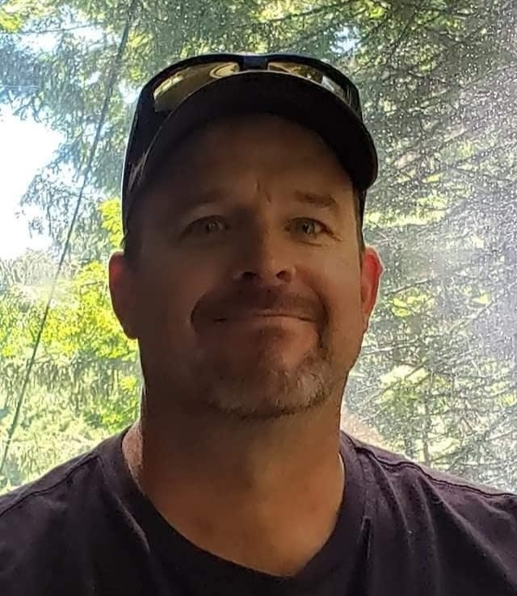

Kris Wirth

Summary
I am a hardworking and dedicated individual with experience in Web
development, Android development and Competitive Programming.
Education
Work Experience
Customer Service Representative - ABC Inc.
June 2014 - May 2018
- Answered customer inquiries via phone and email
- Resolved customer complaints and issues
- Maintained customer records and updated account information
Administrative Assistant - XYZ Corp.
June 2018 - Present
- Assisted with scheduling appointments and meetings
- Managed incoming and outgoing mail and correspondence
- Prepared reports and presentations using Microsoft Office Suite
Skills
- Customer Service:⭐️⭐️⭐️
- Microsoft Office Suite:⭐️⭐️⭐️⭐️
- Organizational skills:⭐️⭐️⭐️⭐️
Awards and Certifications
- Employee of the Month - ABC Inc. (August 2016)
Other